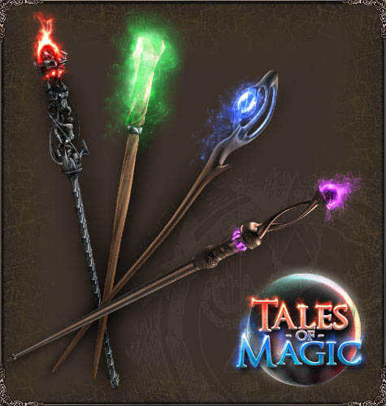
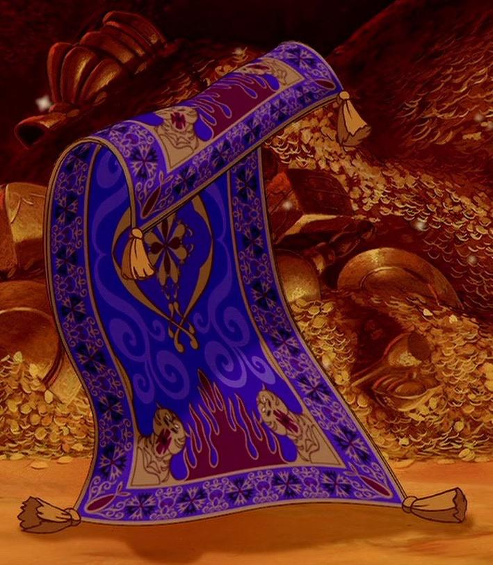
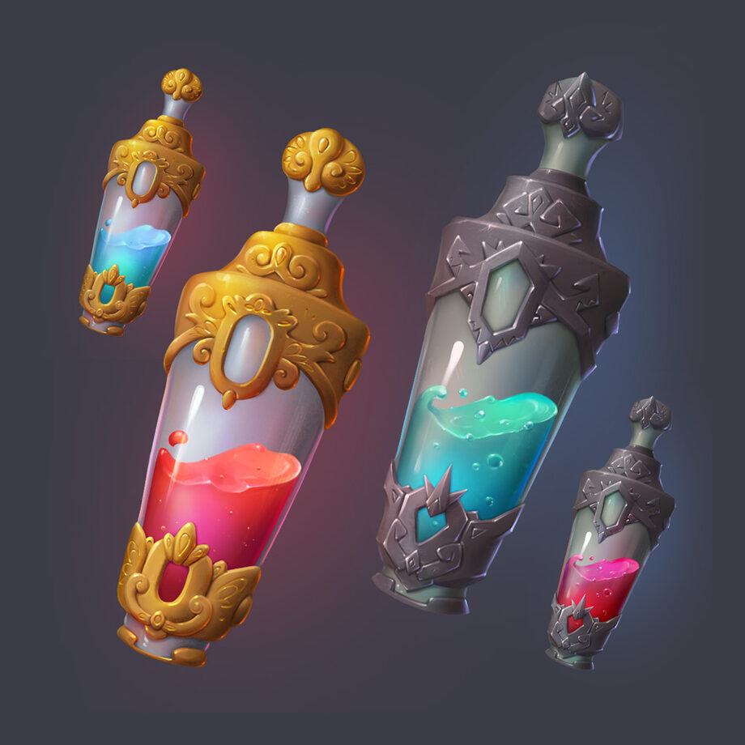
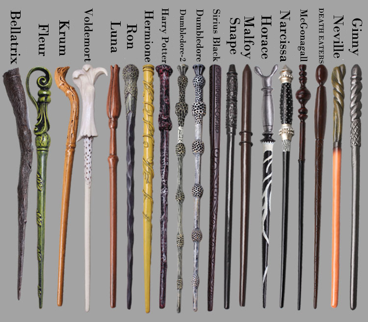

Волшебные палочки — это символ силы и возможностей, их история простирается сквозь века, они увековечены в легендах и историях, захватывающих воображение своей загадочностью и властью, которая скрыта в их тонких и изящных формах.

Ковер-самолет — это волшебный предмет, зачастую ассоциируемый с удивительными историями и магическими возможностями. Известный своей способностью летать, ковры-самолеты воплощают в себе идею свободы, приключений и загадочности.

В мире волшебства зелья играют ключевую роль, будучи неотъемлемой частью магии и алхимии. В литературе и фольклоре зелья часто ассоциируются с древними тайнами, удивительными исцеляющими свойствами, и конечно же, с магией.

Волшебные палочки в мире Гарри Поттера являются ключевым инструментом для проявления магии. Они отражают важность связи между волшебником и искусством магии в этой вселенной. В книгах о Гарри Поттере волшебная палочка считается неотъемлемым атрибутом для проявления волшебства.